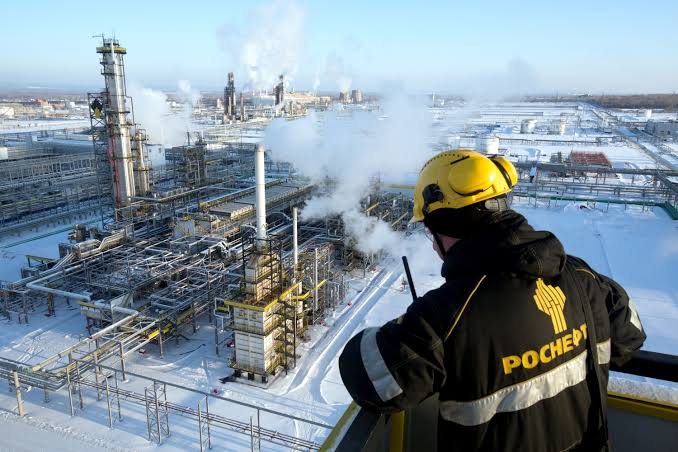
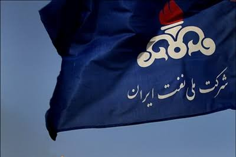

01 / UP · آرشیو حوزه
بالادستی
از شناسایی مخزن و حفاری تا توسعهٔ میدان و تولید نفت و گاز.

چرا قرارداد نفتی بهتنهایی فناوری نمیآورد؟
روایتی از مقالهٔ مسعود درخشان و عاطفه تکلیف دربارهٔ اینکه انتقال فناوری در بالادستی نفت به ظرفیت جذب، یادگیری عملیاتی، اولویتگذاری و نهادی نیاز دارد که بازار فناوری را به حرکت درآورد.
بازکردن مقاله
میدان نفتی فقط با چاه ساخته نمیشود
روایتی از مطالعهای دربارهٔ سیاست سرمایهگذاری روسیه در میادین نفت و گاز؛ از هزینه و ریسک زمینشناسی تا فناوری، زیرساخت و مسیرهای صادرات.
بازکردن مقاله
شرکت ملی نفت؛ خزانهدار دولت یا موتور توسعه؟
روایتی از گزارش مرکز پژوهشهای مجلس دربارهٔ اصلاح رابطهٔ مالی شرکت ملی نفت ایران و دولت؛ مسئلهای که از سهم هر بشکه شروع میشود و به سرمایهگذاری، حکمرانی و آیندهٔ تولید میرسد.
بازکردن مقاله
ریسک فقط وقتی فوران میکند دیده نمیشود
بازخوانی روایی مقالهٔ ژانگ یانتینگ و شینگ لییون دربارهٔ ریسک در عملیات نفتی؛ از زمین و هوا تا تجهیزات، آدمها، روابط محلی، سرمایه و سیاست.
بازکردن مقاله